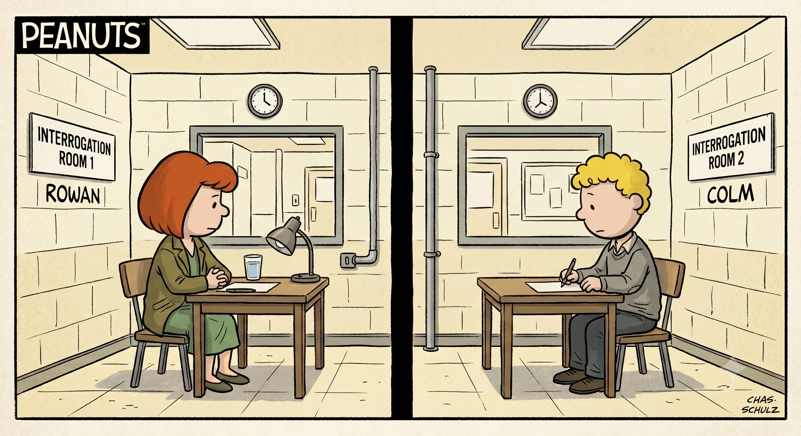
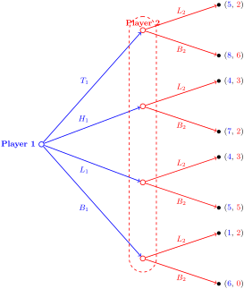
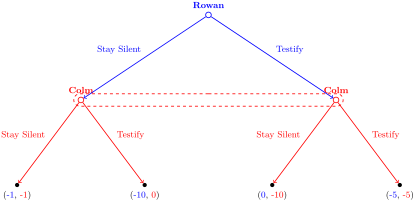

Section 1.2 Game Theory Concepts and Terminology
Subsection 1.2.1 What is a Game?
In Game Theory, a game is any formal situation involving two or more decision-makers where the outcome depends on the actions of everyone involved.
To be considered a fully defined game, a scenario must contain four essential elements:
-
Players: The decision-makers (individuals, firms, countries).
-
Strategies: The complete plans of action available to each player. We also refer to this as a strategy set or space (\(S\)).
-
Payoffs: The rewards or utility each player receives for every possible combination of strategies.
-
Information: What players know about the game’s state and past actions when making a choice.
A key assumption in GT is that all players are rational, i.e., each player chooses the action that gives them the best possible outcome based on a particular goal. This goal is usually, but not always, to maximize expected utility, profits or some other numerical payoff.
We’ll use a famous game, the Prisoner’s Dilemma (PD), to introduce several GT concepts and terminologies.
Rowan and Colm, two Irish bandits on the loose, are finally captured by police. The police take Rowan and Colm into separate rooms and begin their interrogation. They want to extract a confession from the bandits, since their evidence without a confession is rather thin. A detective tells Rowan that if she testifies against Colm (and Colm stays silent), she goes free, with Colm taking the full blame and facing ten years in prison. If she and Colm both testify, they get a reduced sentence of five years each. If she stays silent, but Colm decides to testify, she is the one locked up for ten years, while Colm walks free. If they both stay silent, however, the police only have enough evidence to convict them for minor charges and they would each get one year in prison. The detective in the other room gives Colm the same deal. The bandits are unable to communicate or know what the other will do, so what should Rowan and Colm do?

You’ll see the PD repeatedly throughout the semester in different forms. It turns out the PD is a "silly" example of a very serious problem all societies face. For now, let’s learn to "talk GT" through this example.
Subsection 1.2.2 What Type of Game Is the Prisoner’s Dilemma?
There are two general types of games in GT:
-
Simultaneous Games: Involve players making decisions at the same time.
-
Sequential Games: Games in which players take turns acting.
The Prisoner’s Dilemma is an example of a simultaneous game: Rowan and Colm decide their actions at the same time.
Subsection 1.2.3 Do They Get to Go Again?
The frequency in which players play a game will determine their optimal strategies.
-
One-Shot Games: Played once, no concern for reputation, no need to account for differences in patience levels and time horizons.
-
Repeated Games: Involve playing the same game multiple times. Can be finite or infinite.
In our PD example, Rowan and Colm get one shot to try and save themselves from a lengthy prison sentence.
Subsection 1.2.4 What Are They Playing For?
In GT, players have goals to optimize payoffs, which are the actual or expected returns for each possible outcome of the game.
-
Zero-Sum Games: What you gain, I lose (competition games).
-
Constant-Sum Games: A game in which the sum of all players’ payoffs is a constant, the same for all their strategy combinations.
-
Non-Zero-Sum Games: The sum of the payoffs is not constant.
The goal of either Rowan or Colm isn’t to "win," but to minimize prison time for themselves. The Prisoner’s Dilemma is an example of a non-zero-sum game.
Subsection 1.2.5 Information Distribution and Availability
How much information a player has and whether the other players have similar information matters a lot in solving games. We distinguish between completeness and perfection of information:
-
Complete Information: All players know the rules, the players’ preferences over outcomes, and beliefs about chance moves.
-
Incomplete Information: Involve a Nature player (randomness) or players who do not know about the actions of other players. This leads to asymmetric information issues.
-
Perfect Information: Players know everything they might wish to know about what has happened in the game so far when they make a move.
-
Imperfect Information: Players do not observe all prior actions when making choices.
The Prisoner’s Dilemma has complete information, since both Rowan and Colm know the entire structure of the game (theirs and the other’s possible actions and payoffs). It also has imperfect information, since they are in separate interrogation rooms and make their choices simultaneously.
Subsection 1.2.6 Why Don’t They Cooperate?
In GT, we categorize games relative to the players’ ability to act jointly, so that in:
-
Non-Cooperative Games: Each player chooses and implements his actions individually, without any joint-action agreements directly enforced by other players.
-
Cooperative Games: Joint agreements can be directly implemented and enforced. Enforcement here is key. We’ll learn time and time again that talk is cheap!
Rowan and Colm are in separate rooms and have to decide separately on how to act. In any PD game, one action is known as the cooperative strategy, or cooperation, and the other as defection. Even if they could speak to each, should they trust a fellow bandit?
Subsection 1.2.7 Visualizing The Game
There are two general forms that game theorists use to represent games.
-
Normal Form: Also called game matrix or strategic form. It works well for smaller games, where rows/columns depict payoffs for strategy combinations.
-
Extensive Form: Game trees specifying nodes, branches, and payoffs.
We can depict the PD game we described in both forms, but we need to introduce several terms to learn how to read and create game trees and tables.
Subsection 1.2.8 Welcome to the Matrix
The matrix below shows the possible actions of two players and the associated payoffs of each action given another player’s choices. In this case, Player 1, in row, has four possible actions: \(T_1\text{,}\) \(H_1\text{,}\) \(L_1\) and \(B_1\text{.}\) Player 2, in column, has two: \(L_2\) and \(B_2\text{.}\)
| \(\color{red}{\textbf{Player 2}}\) | ||
| \(\color{blue}{\textbf{Player 1}}\) | \(L_2\) | \(B_2\) |
| \(\textbf{T}_1\) | \(\color{blue}{5}, \color{red}{2}\) | \(\color{blue}{8}, \color{red}{6}\) |
| \(\textbf{H}_1\) | \(\color{blue}{4}, \color{red}{3}\) | \(\color{blue}{7}, \color{red}{2}\) |
| \(\textbf{L}_1\) | \(\color{blue}{4}, \color{red}{3}\) | \(\color{blue}{5}, \color{red}{5}\) |
| \(\textbf{B}_1\) | \(\color{blue}{1}, \color{red}{2}\) | \(\color{blue}{6}, \color{red}{0}\) |
Note that the payoff for row player (Player 1) comes first, here shown in blue. The column player’s (Player 2) payoffs come second, here shown in red. This is a rule. Follow it.
The players’ strategy sets for this game are:
-
Player 1: \(S_1 = \{T_1, H_1, L_1, B_1\}\)
-
Player 2: \(S_2 = \{L_2, B_2\}\)
The subscript in each strategy set shows the name or label of each player.
For Rowan and Colm’s PD game, the matrix looks like this:
| \(\color{red}{\textbf{Colm}}\) | ||
| \(\color{blue}{\textbf{Rowan}}\) | Stay Silent | Testify |
| Stay Silent | \(\color{blue}{-1}, \color{red}{-1}\) | \(\color{blue}{-10}, \color{red}{0}\) |
| Testify | \(\color{blue}{0}, \color{red}{-10}\) | \(\color{blue}{-5}, \color{red}{-5}\) |
Their strategy sets are:
-
\(\displaystyle S_{\text{Rowan}} = \{\text{Stay Silent}, \text{Testify}\}\)
-
\(\displaystyle S_{\text{Colm}} = \{\text{Stay Silent}, \text{Testify}\}\)
Note that their payoffs here are depicted as negative values, to better represent the fact that they would "lose" years of freedom.
Subsection 1.2.9 The Anatomy of a Tree
A GT tree contains the following elements:
-
Nodes: Points in the game in which one of the players takes an action. An initial node is called a root. End nodes contain terminal payoffs.
-
Branches: Represents one action from a player’s action set at some node.
-
Payoffs: The first payoff listed in a vertical tree or extensive form represents the payoff of the first moving agent (excluding nature).
-
Information Set: A decision node layout containing more than one node where a player does not know what the other player has done. We depict an information set by drawing dashed ovals or dashed lines connecting a player’s nodes to indicate that player does not know which node they are playing. This is common in simultaneous games.
-
Game vs. Subgame: The overall game encompasses the entire tree starting from the root node, whereas a subgame is a self-contained portion that begins at a single decision node and includes all subsequent branches without cutting through any information sets.
Subsection 1.2.10 Handling Incomplete vs. Imperfect Information Setups
-
For games with imperfect information/simultaneous choice, we use dashed circles or ovals around decision nodes to indicate that an agent makes their decision without knowing the other’s decision first.
-
Games with incomplete information: Nature becomes the first mover in the game.
The tree below shows a general sequential game in which Player 1 acts first and Player 2 "reacts," knowing Player 1’s action.
You will see below that game trees can be oriented in different directions. The decision of which orientation to use is purely stylistic. A horizontal orientation is preferred when the game has many sequential stages. Shorter games can be shown vertically.
The next tree is the extensive form of the first matrix we looked at, recreated below. The dashed oval around Player 2’s nodes indicates they act without knowing what action Player 1 took. This is therefore a simultaneous and/or imperfect information game.
| \(\color{red}{\textbf{Player 2}}\) | ||
| \(\color{blue}{\textbf{Player 1}}\) | \(L_2\) | \(B_2\) |
| \(\textbf{T}_1\) | \(\color{blue}{5}, \color{red}{2}\) | \(\color{blue}{8}, \color{red}{6}\) |
| \(\textbf{H}_1\) | \(\color{blue}{4}, \color{red}{3}\) | \(\color{blue}{7}, \color{red}{2}\) |
| \(\textbf{L}_1\) | \(\color{blue}{4}, \color{red}{3}\) | \(\color{blue}{5}, \color{red}{5}\) |
| \(\textbf{B}_1\) | \(\color{blue}{1}, \color{red}{2}\) | \(\color{blue}{6}, \color{red}{0}\) |

Below is our Prisoner’s Dilemma example in extensive form.

We have now been introduced to several concepts and terms we will use throughout the semester, but we have not yet answered a key question: what will Rowan and Colm do? That’s up next.